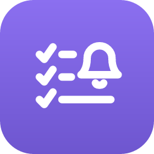

Your tasks, right where you code.
Personal todos, Jira tickets, merge requests, and reminders — all in your VS Code sidebar. No accounts. No sync services. Just flow.
Global tasks follow you across all projects and sync across VS Code windows in real time. Workspace tasks stay with the project. Quick-add with priority flags — type and hit Enter.
Set a reminder on any task, Jira ticket, or merge request. When it fires, you get a VS Code notification with Mark Done, Snooze, or Dismiss. Ignored? It re-fires in 60 seconds.
See assigned Jira tickets without leaving VS Code. Filter by status, project, or custom JQL. Set reminders on tickets you need to follow up on.
Track merge requests awaiting your review and your own PRs with live approval status. Set reminders so code reviews never slip through the cracks.
Automatically scans for TODO, FIXME, HACK, and XXX comments across 20+ languages. Click to jump to the exact line. Updates in real time as you save.
No accounts. No configuration. No internet required. Adapts to any theme.
TodoPad is free and always will be. Sponsorships keep the caffeine flowing and the features shipping.
Sponsor on GitHub